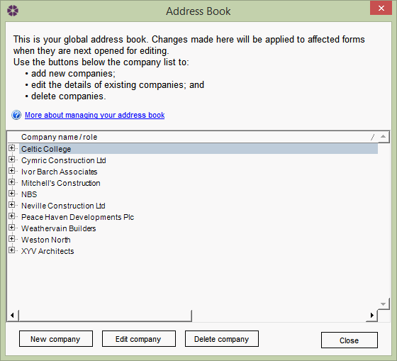
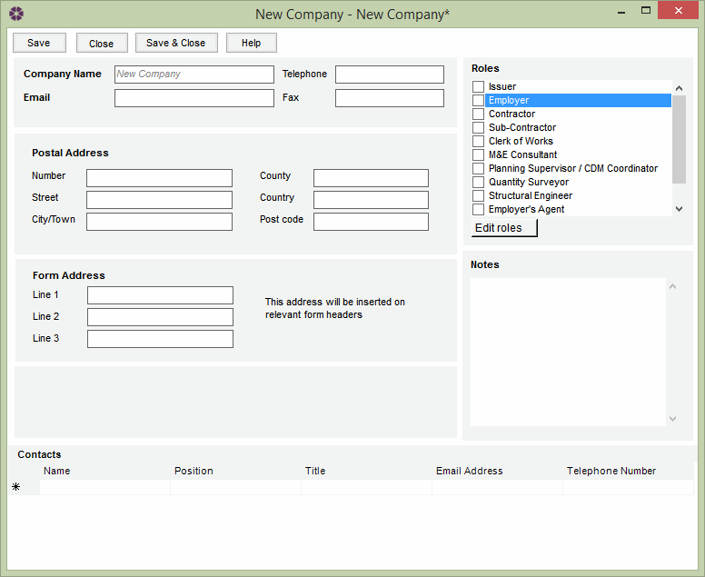

Managing the Address book |
The Address Book allows the user to create and manage company contacts for use in a job. To access the Address book, go to Tools > Address book.

Here the user can do the following:
Either click on New company or select an existing company in the list and click on Edit company - the user will be presented with the following window:

Complete/adjust the company contact properties by filling in each of the fields and selecting the appropriate options. These include:
Each company has to be assigned a Role in the job. A list of available Roles are displayed to the right hand side of the company details.
It is possible to add Custom Roles as well if the default ones aren't suitable. For more information on how to do this, see Roles.
Select the appropriate Role for this company from the list. If the user is unsure, they can come back later.
Finally, the user can enter the Contact details in the in the bottom Contacts section. For each contact, the following can be inserted manually:
Once all the fields have been completed/amended successfully, click on Save and Close to update the Address Book.
It is possible to delete an existing company from the Address Book so new jobs won't be able to use the company - existing Jobs that contain this
company won't be affected.
To delete a company, simply select it from the Address Book list and click on the Delete company button.
A confirmation window will pop up - click OK to confirm deleting it or Cancel to cancel and exit.
As noted above, the issuer of NBS Contract Administrator can not be deleted, only amended. To amend the issuers details, see Issuer Details.
See also:
FAQ - Adding Custom Roles
Issuer Details
Managing the Address Book (online demo)